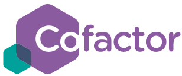
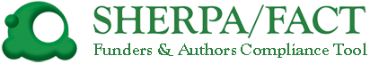
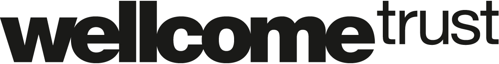

How to find a suitable open access journal?
The following resource was created in collaboration with Ross Mounce, Scott St. Louis, and Joe McArthur, along with feedback from the open community.
Scroll down to see our one-page, shareable guide and download via figshare .
Want to publish openly and looking for a suitable journal? Here are some steps you can take...
1. Browse the Directory of Open Access Journals
The
DOAJ
is the foremost trusted listing of over 10,000
registered open access journals. Searches by subject, article
processing charges, journal license, publisher, country of publisher,
and full text language, type of peer review (blind, double-blind,
open, etc.), and archiving policy (CLOCKSS, PubMed Central, etc.) are
available.
To be included in the DOAJ, each journal must apply and meet a number of criteria, including open licensing of all published materials and editor-mediated peer-review. In addition, select journals who:
- use DOIs as permanent identifiers
- provides DOAJ with article metadata
- deposits content with a long term digital preservation or archiving program
- embeds machine-readable CC licensing information in articles
- allows generous reuse and mixing of content, in accordance with a CC BY, CC BY-SA or CC BY-NC license
- has a deposit policy registered wíth a deposit policy registry
- allows the author to hold the copyright without restrictions
receive a special DOAJ Seal of Approval. Thus, researchers can find high-quality open access
journals in their field through the DOAJ.
2. Use the CoFactor Journal Selector Tool

The
Cofactor Journal Selector Tool
is not exclusive to open access journals, but allows
authors to filter by several options, including whether the journal is
fully open, or has an open publishing option (hybrid journal).
In addition, authors can search journals by article processing charges, fee waivers policy, and open licensing options. Other search filters include subject, peer review type, speed of revision and publication, impact factor, copyediting, and more.
The database is new and still growing, but provides an excellent starting point for researchers to customize their journal selection.
3. Talk to your mentors, librarians, and colleagues who focus on scholarly communication issues in your field
Scholars from many disciplines are seeking to promote the development
and growth of rigorous open access publishing options in their
fields. For example, neuroscientist Erin McKiernan created this
shareable list of such options for her colleagues.
4. Check that your journal choice is compliant with your funder's policies
 SHERPA/FACT is a database that allows researcher's to check whether specific journals meet their funder's sharing policies. Just type in the name of the journal and the name of your funder. Currently available only for UK funders.
For researchers outside the UK, SHERPA/JULIET is a database of funder policies on article and data sharing. Researchers can search by funder name or country, and check licensing and embargo requirements.

Some funders even maintain lists of journals that are non-compliant
with their open publishing policies.
Quality checks to conduct before submitting
1. Look at the journal’s content.
Read a selection of articles that have previously been published there. If they’re interesting and relevant to your work, the journal may be suitable. If not, keep looking.
2. Learn more about the journal’s leadership and professional affiliations
Have a look at the editorial board of the journal. Do you know who any of the editors are? Is their research relevant to your broad subject area? Is the publisher a member of the Open Access Scholarly Publishers Association (OASPA) ? If not, tread carefully. However, a small society-operated journal of good quality that is not an OASPA member is not a big concern.
3. Examine the journal’s identifying information
Ensure that the journal has an ISSN and that the ISSN is validated. Ensure the journal provides all new articles with 'resolvable persistent identifiers', such as DOI’s or Handles, e.g. or . Articles are arguably less discoverable and trackable without these.
In other words...
The new site thinkchecksubmit.org outlines steps you should take and questions you should answer (see their checklist) before submitting to any journal.